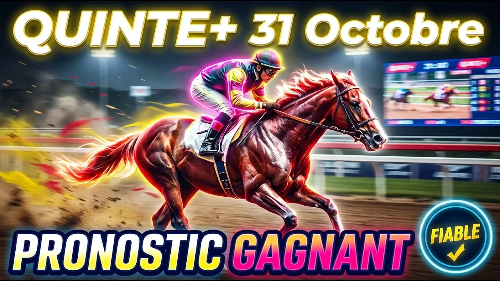

Bienvenue sur la côte normande, là où la Piste en Sable Fibré de Deauville s'apprête à faire trembler les certitudes des parieurs hippiques ! Ce samedi 31 octobre 2026, à quinze heures quinze précises, quatorze poulains et deux pouliches de trois ans prennent le départ du Prix du Pays de Bray. C'est la troisième course de la Réunion 1, un handicap divisé de niveau première épreuve doté de cinquante-deux mille huit cents euros sur les mille neuf cents mètres de la piste en sable.
Si vous en avez marre des pronostics superficiels et des analyses répétitives, préparez-vous. Aujourd'hui, nous changeons complètement de style pour décortiquer la vérité des chiffres, la mécanique des cordes et la réalité de la valeur handicap. Attachez vos ceintures, ça va secouer !
Pourquoi tant de tickets finissent-ils à la poubelle dès le premier tournant de Deauville ? La réponse tient en un mot : la surface. La Piste en Sable Fibré corde à droite exige un sang-froid total, un placement impeccable et une fluidité absolue dans le parcours. Certains poulains volent littéralement sur ce sable synthétique, tandis que d'autres s'y empêtrent complètement.
Si vous vous contentez d'évaluer les performances passées sur le gazon sans mesurer la transition sur le sable, vous courez à l'échec. Nous sommes sur mille neuf cents mètres avec un départ rapide avant le premier virage. Corde à droite, le choix du jockey et le placement initial conditionnent soixante-dix pour cent du résultat. La référence handicap est fixée à plus vingt virgule cinq. Tous les concurrents ont trois ans, ce qui signifie que la marge de progression chez certains est gigantesque !
Commençons avec le numéro un, Zelzara. Cette pouliche entraînée par Yannik Barberot est montée par Hugo Journiac. Elle porte le top-weight de soixante kilos en valeur trente-neuf virgule cinq avec la corde numéro quinze. Très régulière dans les Quinté et Listed, elle a fini quatrième sur ce tracé en août et deuxième à ParisLongchamp en septembre. Malgré son poids élevé et cette corde à l'extérieur qui ne lui facilite pas la tâche, sa classe lui permet de viser une place dans la combinaison festive du jour.
Le numéro deux, Wood Ming, représente l'entraînement de Madame Corine Barande Barbe avec Ronan Thomas. Ce mâle porte cinquante-neuf kilos et demi avec la corde dix. Auteur de trois succès cette saison, il a montré un beau visage. Cependant, sa récente tentative s'est soldée par un net échec. Dans ce lot très relevé, il devra rassurer avant d'être retenu.
Le numéro trois, Louiza, entraînée par Mikel Delzangles et confiée à Pierre-Charles Boudot, porte cinquante-neuf kilos et demi avec la corde treize. Vainqueure de son maiden à Vichy puis d'un handicap à ParisLongchamp, elle a déçu en terrain lourd récemment. Retrouvant la Piste en Sable Fibré qu'elle apprécie, elle détient une belle chance pour les accessits de cette belle après-midi festive.
Abordons le numéro quatre, Bon Viveur. Ce poulain préparé par Gabriel Pannier est monté par Stéphane Pasquier sous cinquante-neuf kilos avec la corde quatorze. Cinquième récemment sur ce parcours exact, son entraîneur lui met des œillères australiennes pour la première fois. Ce réglage peut lui apporter le piquant nécessaire pour briller lors de cette belle journée de courses. C'est un outsider séduisant qui peut pimenter les rapports !
Regardons le numéro cinq, Crackon. Entraîné par Mauricio Delcher-Sanchez et monté par Ioritz Mendizabal, ce hongre porte cinquante-neuf kilos avec la corde trois. Quatrième pour sa rentrée sur mille six cents mètres, il est en excellente forme. Bien placé le long du rail avec le numéro trois dans les stalles, c'est un candidat sérieux pour les places qui va profiter de ce beau samedi normand.
Venons-en à la grande favorite de cette fête du samedi, le numéro six, Victory Pace ! Cette pouliche mise au point par Gérald Mossé est associée à Marvin Grandin sous cinquante-huit kilos en valeur trente-sept virgule cinq, avec la corde cinq. Modèle de régularité, elle a terminé quatrième du Quinté de fin août sur ce tracé, puis deuxième à Compiègne et Saint-Cloud. Idéalement située dans les stalles avec un numéro en or, c'est la base incontournable de votre samedi hippique. Elle a tout pour faire la fête dans la ligne droite finale !
Le numéro sept, Palm Springs, dépend de l'entraînement de Mario Baratti et de la monte de Clément Lecoeuvre. Cette fille de Wootton Bassett porte cinquante-huit kilos et hérite du numéro un dans les stalles, le jackpot ! Troisième du Quinté de ParisLongchamp puis quatrième à Saint-Cloud, elle bénéficiera d'un parcours en or le long du rail. Avec ce placement de rêve, elle vise carrément le podium pour illuminer ce samedi après-midi normand !
Observons le numéro huit, Natorspeed Essef. Ce poulain préparé par Henri-Alexandre Pantall est monté par Tony Piccone sous cinquante-huit kilos avec la corde huit. Révélation de l'été avec deux succès consécutifs qui avaient fait sensation, il effectue sa rentrée après quatre mois d'absence. Même s'il a du talent à revendre, ce manque de compétition face à des adversaires affûtés pour ce grand samedi incite à la prudence.
Passons au numéro neuf, Amie Amour. Entraînée par le duo Brandt, elle est associée à Maxime Guyon sous cinquante-sept kilos et demi avec la corde six. Cette fille de Lope de Vega adore littéralement le sable ! Vainqueure sur ce parcours fin août dans un festival de vitesse, elle vient de se classer deuxième sur la Piste en Sable Fibré de Chantilly. En pleine possession de ses moyens et affûtée comme jamais, c'est une priorité absolue pour faire sauter la banque ce samedi !
Le numéro dix, Il Magistero, est un hongre entraîné par Marc Cesandri avec Léonard Plommée sous cinquante-sept kilos et demi, corde neuf. Lauréat de trois courses en province cette année qui ont fait plaisir à ses suiveurs, sa valeur a grimpé. Nettement dominé dernièrement à ce niveau face aux cadors, la marche semble cette fois trop haute face aux spécialistes. Nous le laissons de côté pour profiter d'autres opportunités ce samedi.
Abordons le numéro onze, Mister Black. Préparé par le tandem Lerner, il est monté par Marc Lerner sous cinquante-sept kilos avec la corde quatre. Spécialiste absolu du parcours où il a gagné son handicap en août dans un festival de vitesse, il reste sur une troisième place très encourageante à Saint-Cloud. Avec ce bon numéro de corde qui lui garantit un parcours fluide, Mister Black vise carrément la victoire pour illuminer ce samedi normand !
Le numéro douze, Ingeborg, entraînée par Joël Boisnard est confiée à Hugo Boutin avec la corde seize. Absente depuis plusieurs mois, elle hérite en plus du plus mauvais numéro de corde tout à l'extérieur. Cette rentrée s'annonce délicate pour cette fête du samedi.
Le numéro treize, Blanc Carat, entraîné par Vincent Sartori et monté par Giovanni Sias avec la corde deux. Vainqueur en mai sur le sable, il a déçu lors de ses sorties suivantes. Malgré son bon numéro dans les stalles, sa forme reste incertaine.
Le numéro quatorze, Honey Pearl, préparée par Charles Lecrivain avec Anthony Crastus et la corde douze. Deuxième d'un réclamer sur le sable dernièrement, elle monte ici de catégorie face aux ténors. Sa marge paraît trop limitée pour briller ce samedi.
Le numéro quinze, Parvage, dépend de l'entraînement de Yannik Barberot avec Dorian Provost sous cinquante-cinq kilos et demi, corde sept. Vainqueur sur ce tracé exact en juin dans une belle démonstration, il a fait preuve d'une régularité remarquable tout l'été. Sa fraîcheur et son aptitude démontrée au sable de Deauville en font un candidat capable de pimenter sérieusement les rapports de ce samedi festif !
Terminons avec le numéro seize, Marasi Drive. Entraîné par Fabrice Chappet et monté par Aurélien Lemaitre, ce hongre porte cinquante-cinq kilos avec la corde onze. C'est notre coup de poker explosif de la course ! Brillant vainqueur sur le sable de Chantilly en devançant justement Amie Amour dans un finish haletant, il est idéalement situé en bas du tableau handicap. Avec son poids plume et sa forme étincelante, il peut créer une énorme sensation sur le podium et faire exploser les cotes pour un samedi mémorable !
Pour construire votre stratégie de jeu gagnante sur ce Prix du Pays de Bray festif, privilégiez avant tout la forme récente démontrée sur le sable et la position avantageuse dans les stalles de départ. La favorite Victory Pace offre de très solides garanties pour le podium, mais Mister Black et Amie Amour restent des rivaux redoutables qui adorent cette surface. Pour viser les plus gros gains et faire sauter la banque ce samedi après-midi, intégrez absolument notre pépite Marasi Drive qui peut créer la surprise, ainsi que Palm Springs avec son rail en or et Zelzara qui possède la classe supérieure !
Base : 6 Victory Pace
Top 5 : 6 - 11 - 9 - 16 - 7
Couplé Placé (sécurité samedi) :
6 Victory Pace avec 11 Mister Black et 9 Amie Amour
Deux sur Quatre (rapport festif) :
6 - 11 avec 9 - 16 - 7 - 1
Multi en 5 (rentabilité optimale) :
6 - 11 - 9 - 16 - 7
Quinté+ Ordre (coup explosif du samedi) :
6 - 11 - 9 en base avec 16 - 7 - 1 - 3 - 4 en associés
Retrouvez l'analyse vidéo complète sur notre chaîne YouTube Bravo Turf. N'oubliez pas de vous abonner, d'activer la cloche des notifications et de laisser un pouce bleu si cette analyse vous a apporté de la valeur pour ce beau samedi hippique !
⚠️ Jouez avec modération
Le turf doit rester un plaisir festif, surtout le samedi ! Ne misez jamais plus que ce que vous pouvez vous permettre de perdre. Fixez-vous un budget hebdomadaire et respectez-le scrupuleusement. En cas de difficulté, consultez Joueurs Info Service au 09 74 75 13 13.